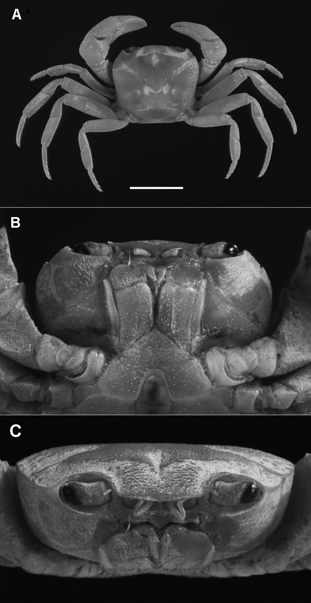
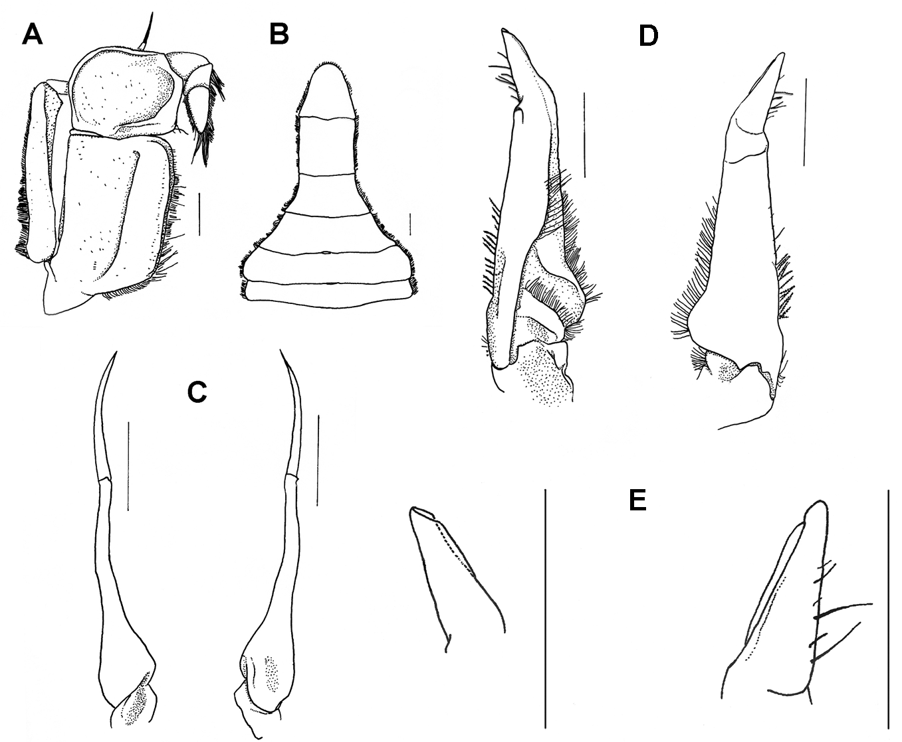
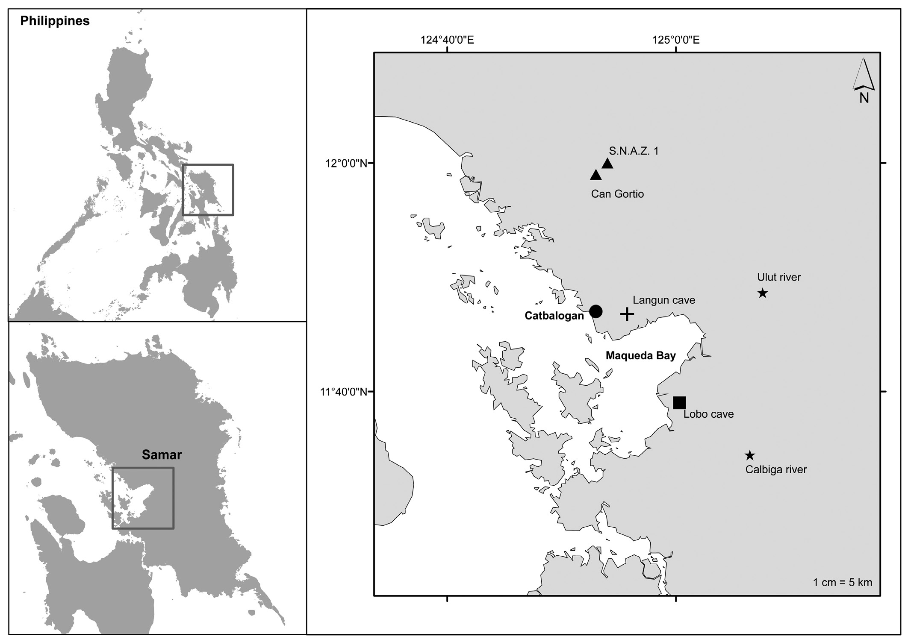

Sundathelphusa spelaeophila, a new species of cavernicolous crab from Samar, Philippines (Decapoda: Brachyura: Gecarcinucidae)
Stasolla, G, Abbarchi, A, Innocenti, G
Abstract
Full text
Full text is available as a scanned copy of the original print version.
Get a printable copy (PDF file) of the
complete article, or click on a page image below to browse page by page.
Links are also available for
Selected References.
Images in this article

Fig. 1 Sundathelphusa spelaeophila n. sp., holotype, male (15.9 × 14.1 mm) (MZUF 3920). A, dorsal view (Scale bar = 10 mm); B, ventral view; C, anterior view.

Fig. 2 Sundathelphusa spelaeophila n. sp., holotype, male (15.9 × 14.1 mm) (MZUF 3920): A, right third maxilliped; B, abdomen; C, right G2, respectively ventral and dorsal view; D, right G1, respectively ventral and dorsal view; E, tip of right G1, respectively ventral and dorsal view. Scale bars = 1.0 mm.

Fig. 3 Map of the localities of the four Sundathelphusa species collected in western Samar: ▲ S. spelaeophila n. sp.; « S. philippina; È S. waray (Langun cave); ■ S. lobo (Lobo cave).